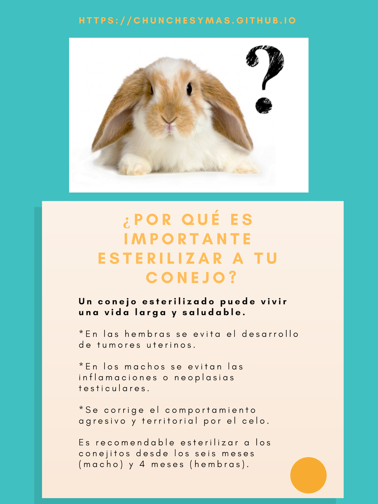
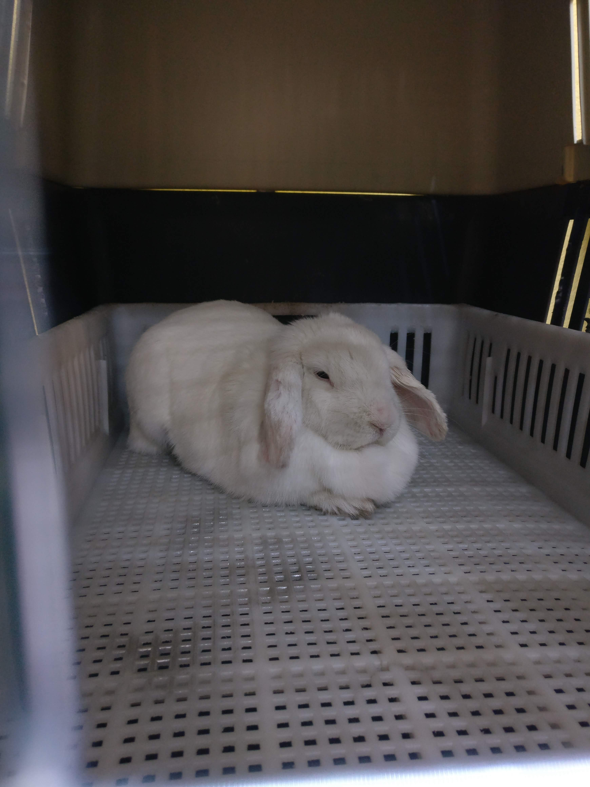
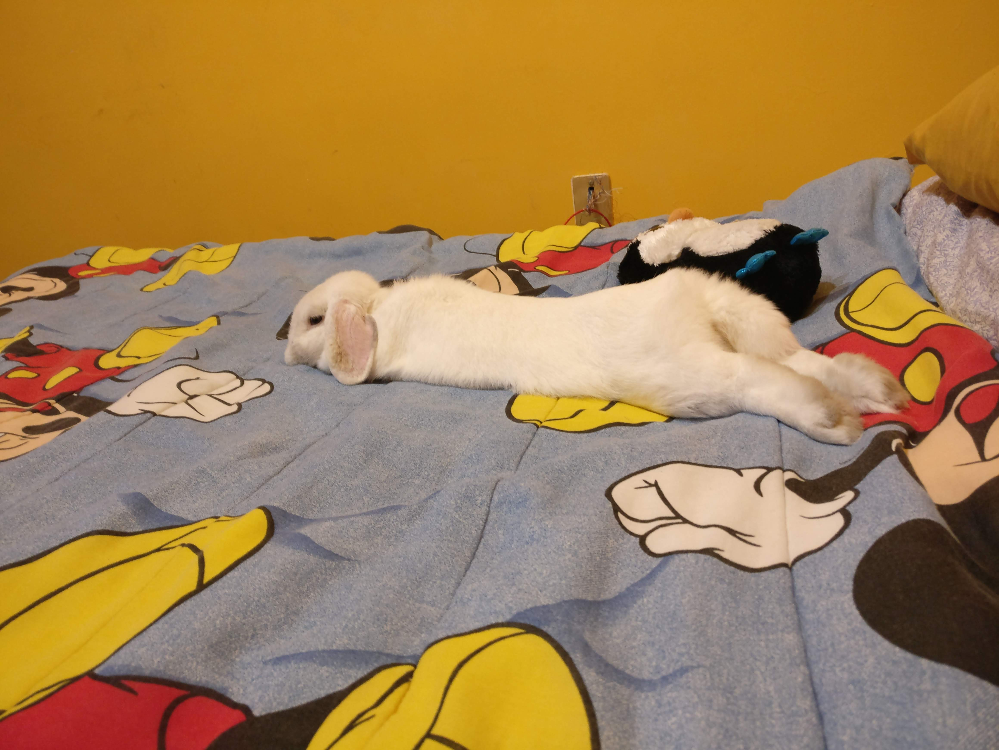

La travesía de Valentina 🏥
Aiñ nanita! Nomás de acordarme me da sabe que!! 🐰😱
Hahaha! No por nada eres la reina del drama Valentina, pero sabes que fue por tu bien, te apapaché muchísimo y comías súper sabroso durante tu recuperación así que no todo fue malo.
Para comenzar hay que saber que si tienes una mascota, es muy importante que tengas en mente el tema de la esterilización y los gastos que ésta genera, no lo tomes a la ligera ni como una tortura para tu mascota ya que en verdad estas procurando su salud al realizar esta operación.
Los conejos están hechos para reproducirse y no por nada existe el dicho de "se reprodujeron como conejos" 😄, si piensas reproducir a tu conejo hazlo con las precauciones debidas y pensando en si podrás mantenerlos y evita venderlos o darlos a personas que no sabes si les darán una buena vida.
Si tu meta no es la anterior y quieres procurar la salud de tu conejo acude a un veterinario de exóticos que te pueda brindar información, una evaluación para tu conejo y la seguridad de que el procedimiento será exitoso. Te dejo algunas razones por las que es importante esterilizar a tu conejito/a :

Mi experiencia
Ahora sí, les voy a contar toda la travesía. Primero consulté con el Vet si él realizaba esterilizaciones para conejos y me confirmó que sí, me explicó el procedimiento, me señaló el costo ($2,500 aprox.) y me dio cita para Valentina. Me indicó que Valentina tenía que llegar en ayuno al procedimiento y que iba a permanecer el día siguiente para observación y que si no presentaba alguna dificultad al tercer día ya la podíamos traer a casa.
Valentina en ese entonces ya tenia 12 meses por lo que el Vet me señaló que estábamos a muy buen tiempo. El miércoles primero de agosto por la noche le di de cenar temprano, antes de las 8 y preparé su trasportadora y su cobijita para su traslado a la veterinaria por la mañana. Alrededor de las 12:00 pm llevamos a Valentina a la clínica y la dejamos para que la prepararan y nos dijeron que a las 4:00 pm iban a intervenirla.
Pasadas las cuatro de la tarde llamamos y nos comento la secretaria que todo había salido bien y que si queríamos podíamos ir a visitarla, así que fuimos y la encontramos acostadita recuperándose con algo de suero. Nos despedimos y quedamos de volver por ella al día siguiente ya para llevarla a casa.

El viernes que fuimos por ella nos recomendaron que observáramos que comiera bien, que tomara suficiente agua y que no saltara tanto. Llegamos a casa y Valentina se acostó a descansar y milagrosamente no andaba tan traviesa, poco después comenzó a comer y poco a poco al paso de los días empezó a moverse como de costumbre e incluso ya para el domingo saltó hacia la cama y ahí se acostó a descansar. La verdad pienso que gracias al buen trabajo del Vet y tenerla en observación un día hizo las cosas más sencillas.

Dos semanas después fuimos con el Vet a que le retirara los puntos y finalmente había concluido la travesía, Valentina estaba al 💯 y ya andaba haciendo travesuras como siempre. En Instagram les dejaré un video de su primer salto después de la operación.
Si son de San Luis Potosí, San Luis Potosí les dejo los datos del Veterinario, el cual nos ha atendido y ayudado muy bien en todas las ocasiones que Valentina ha necesitado asistencia médica:
Eleazar Hernández Bravo (Clínica Medical Vet)
García Diego 488, Tequisquiapan
78238, San Luis Potosí, San Luis Potosí
Teléfono : 01 (444)813 34 78
email : medicalt@prodigy.net.mx
Espero les sirva esta información y si les gustó compártanlo con sus amigos y en sus redes sociales.
Mis Herramientas de trabajo
Laptop: Acer Aspire R15 Convertible
Cámara: Nikon D5300
Celular: Oneplus 3T